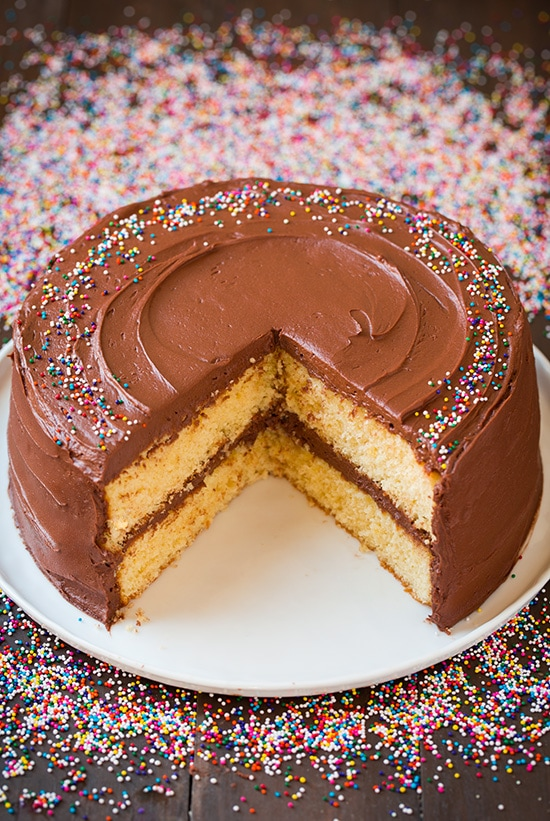

05/Jan
Classic Yellow Cake With Chocolate Frosting
This fluffy vanilla is the absolute best yellow from scratch and paired with the silky smooth chocolate frosting, you can't beat it for a classic birthday cake or any other celebration
Read More07/Jan
Coconut Bundt Cake with White Chocolate-Coconut Glaze

Last week flew by and before I knew it, it was time to plan the menu for Sunday dinner.
Sundays have been a perfect opportunity for me to experiment with new dessert recipes,
especially those that serve tons of people,
since we have help polishing it all off and don't have it tempting it sitting around the house, for days.
01/Feb
Cream Cheese Pound Cake

If you are looking for the perfect cream cheese pound cake recipe that tums out buttery mist, and dense each and every time,
and this year und glee to ple easy cream cheese pound
cake will quickly become your reserve plain with a sprinkle of powdered sugar or offer homemade whipped com
12/Feb
German Chocolate Cake

I have long associated German Chocolate Cake with Father's Day, although I'm not entirely sure why.
I think I remember my mom making it for my dad once or twice growing up
(although never on Father's Day, ironically)
and the correlation must have stuck somewhere along the way